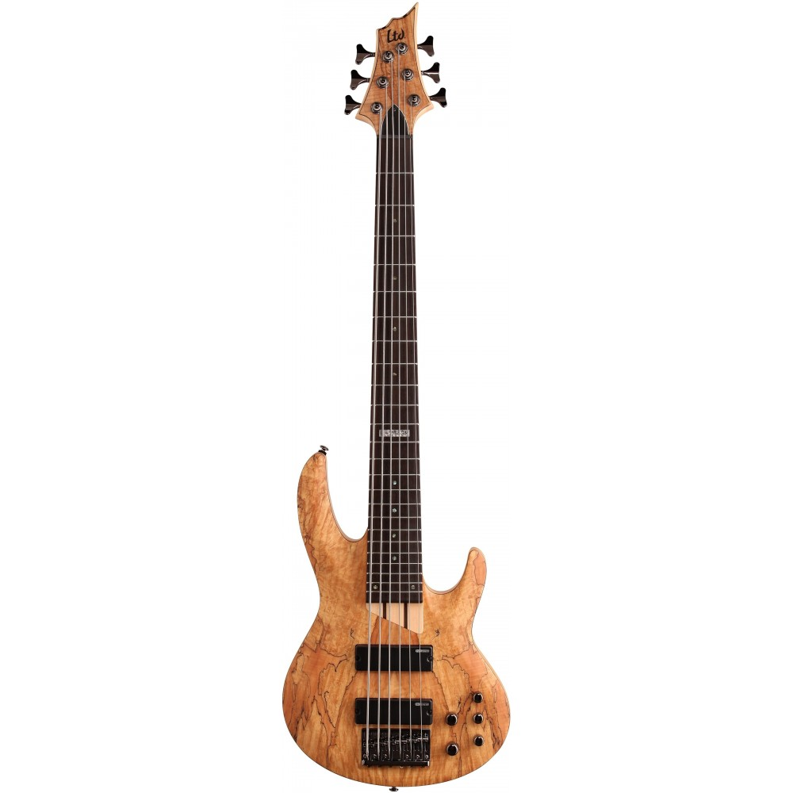
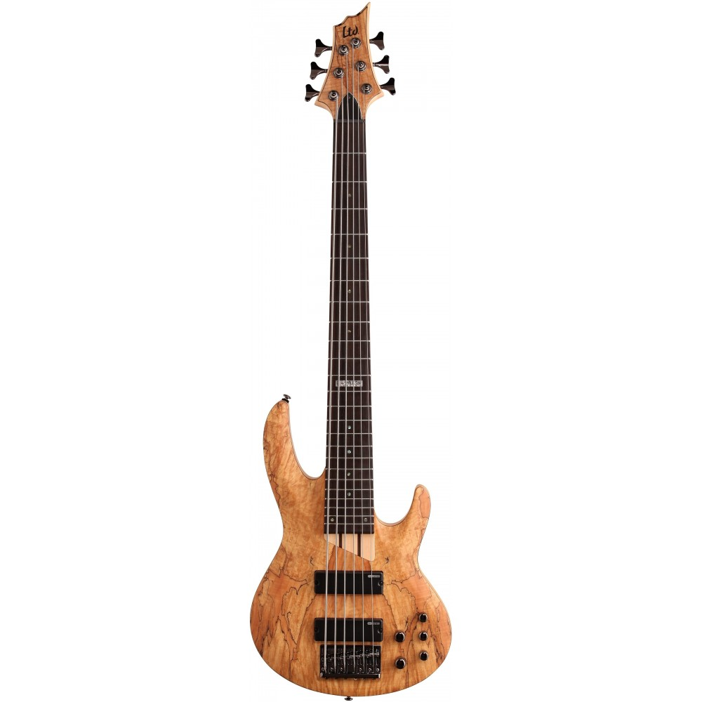

Nuevo Bajo Ibanez


Este pedazo de bajo Ibanez SRAS7-DEB Ashula MKII pone los dientes largos a cualquier bajista. No me digáis que no es una preciosidad! Ahora bien, el Ibanez SRAS7-DEB Ashula MKII está indicado para bajistas profesionales. Como podrás observar cuenta con, ni más ni menos, que 7 cuerdas. El cuerpo y diapasón de este increíble bajo está realizado en madera de palisandro, caoba y nogal. El mástil es de 7 piezas fabricado con maderas de gran calidad como el arce, corazón púrpura y palisandro. Cuenta con 22 trastes medium, y como puedes obsevar en la imagen desde las cuerdas 7-5 no tiene trastes. Su color es una preciosidad, lo denominan Dragon Eye Burst o Sunburst ojo de dragón. ¿Y qué decir de su sonido? Es uno de los mejores bajos eléctricos Ibanez, y la calidad de su sonido está garantizada. Pastillas SRAS Super J (mástil), SRAS Super J (puente) Tamaño de las cuerdas: .045, .065, .085, .105 Tapa armónica: Poplar Burl Longitud escala: 34″ (86,36 cm) Ancho de la cejilla: 63mm La idea de tener dos instrumentos en uno es genial, el poder disponer de dos bajos en uno que no sea tan aparatoso es una idea fantástica. El sonido de las pastillas y el piezo es muy bueno y versátil, el diapasón está muy logrado y fácil de tocar y la imagen es de un instrumento de primera calidad. En resumen, por el precio que tiene y la calidad, es difícil igualar algo así. Un gran aplauso para los bajos eléctricos Ibanez.
 
